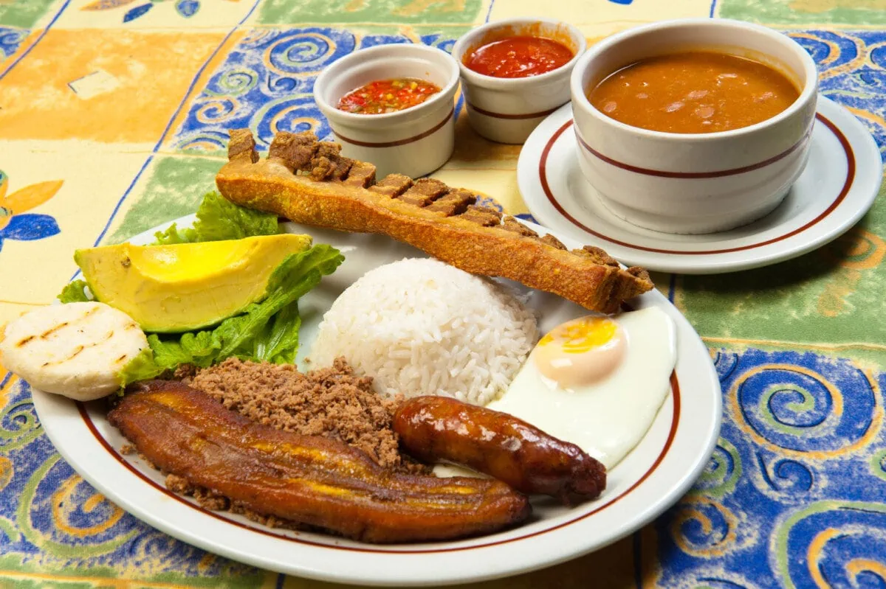
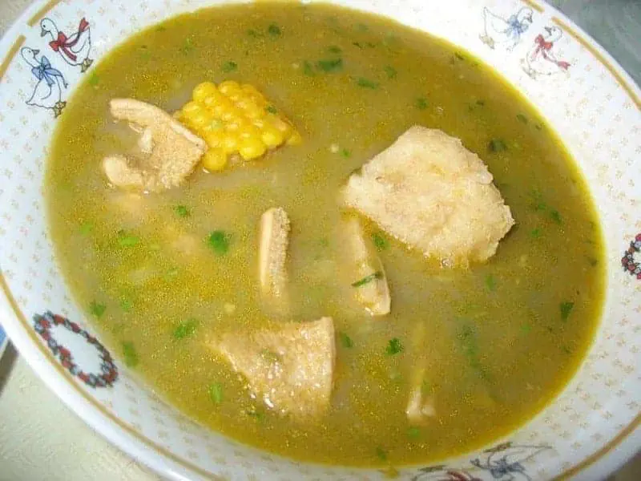

menu de platos tipicos
bandeja paisa
Bandeja Paisa es una comida tradicional de la región Paisa de Colombia, que incluye las ciudades de Medellín, Santa Fe de Antioquia, Guatape y Jardín. De hecho, es tan querida que ha sido adoptada como plato nacional de Colombia. Esta abundante comida usualmente contiene arroz blanco, frijoles rojos, carne molida o picada, plátano, chorizo, maíz, chicharrón de cerdo, huevo frito, arepa y un aguacate. Los ingredientes pueden variar de una ciudad a otra y de un restaurante a otro, añadiendo o quitando ciertos ingredientes. El tamaño de la porción también puede variar entre la comida completa y la mitad o un cuarto del tamaño del plato tradicional
valor:$20.000
lechona
a lechona es una mezcla de garbanzos, carne de cerdo, especias y ocasionalmente arroz (dependiendo de la zona) que se sirve a menudo con una arepa. De forma tradicional esta mezcla de ingredientes se cuece lentamente hasta por 10 horas dentro de un asado de cerdo entero que infunde todos los sabores juntos y crea un delicioso plato. Mientras que Lechona se puede encontrar en restaurantes en toda Colombia, es originaria de la región del Tolima, que está al suroeste de Bogotá y contiene las principales ciudades de Ibagué y Espinal

valor:$12.000
sancocho
El sancocho proviene del plato tradicional español y es popular en toda América del Sur, y cada país tiene una visión única del plato. Colombia no es diferente: el plato colombiano varía entre el pescado de la costa y los diferentes tipos de carne de otras regiones. Siempre contiene yuca, maíz, papas y plátano, y por lo general se sirve junto con arroz blanco. Este plato es originario de la región del Valle del Cauca que contiene las ciudades de Cali, Buenaventura y Tuluá
valor:$5.000
autore:adrian miranda ; brenda cuero